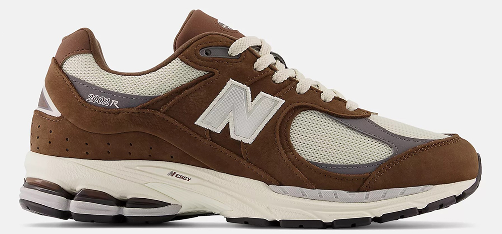
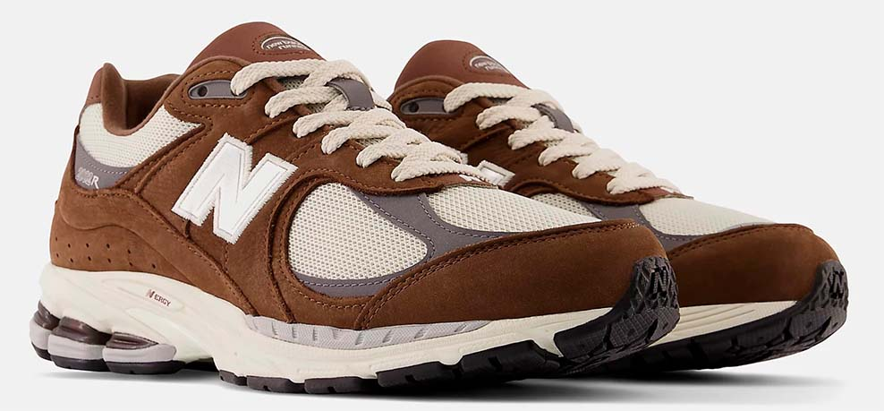
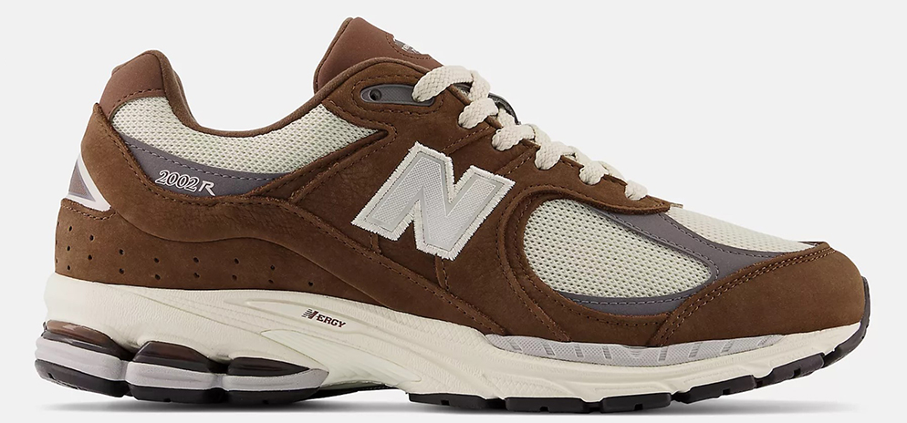
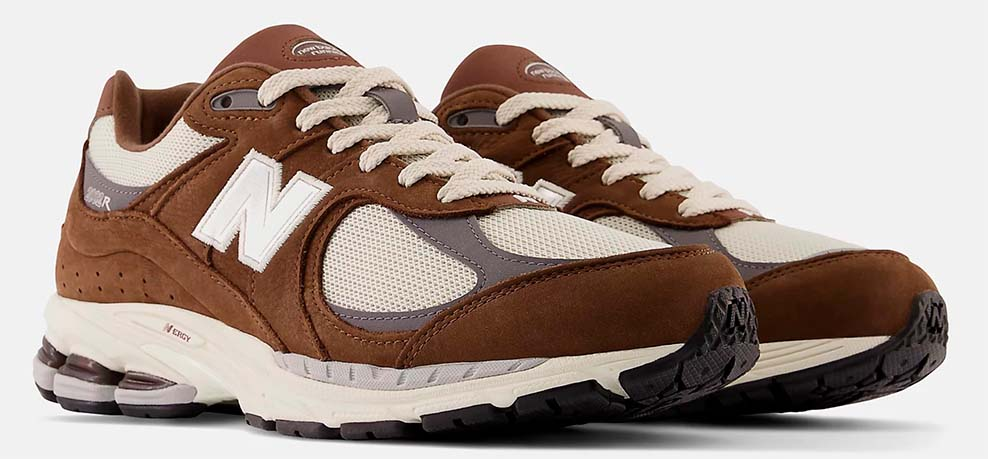
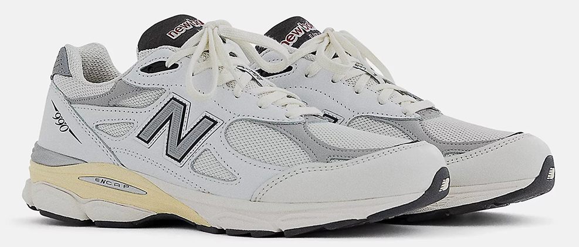
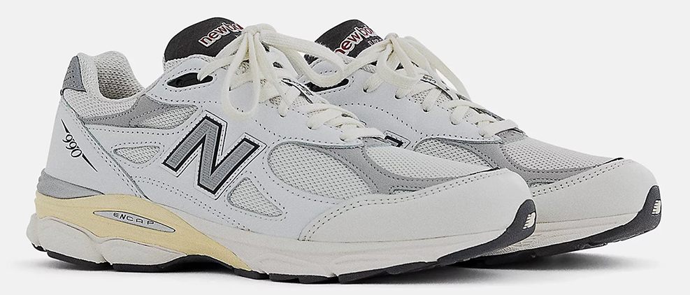
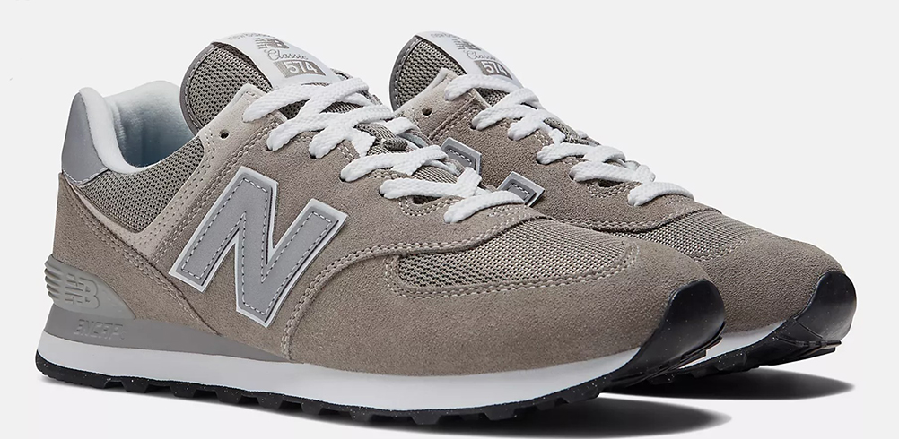
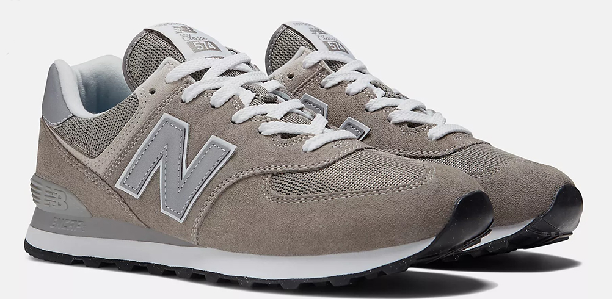

Un diseño inspirado en el calzado de running de los 2000 con un toque actual. Las zapatillas 2002R para hombre irradian estilo en tu día a día. Derrocha personalidad con esta silueta retro confeccionada en ante, nobuk y malla de primerísima calidad. La tecnología ABZORB, N-ergy y Stability Web te proporcionan el apoyo y el confort que necesitas para afrontar el día con confianza.
La entresuela ABZORB absorbe los impactos mediante una combinación de amortiguación y resistencia a la compresión, empeine de ante, malla y nobuk que aúna estilo y confort, la tecnología Stability Web de la suela proporciona una mayor sujeción en el arco, la suela N-ergy absorbe mejor los impactos, la amortiguación del talón con tecnología ABZORB SBS ofrece una estabilidad y comodidad excepcional, sistema de lazada para un ajuste seguro, diseño inspirado en las zapatillas del 2000 para un look retro.
Hay tallas desde el número 36 hasta el 47, tiene peso de 391 gramos y su precio comienza desde los 140 euros.
Compralo aquí. 

Los diseñadores originales de la 990 tenían la ardua tarea de crear la mejor zapatilla de running del mercado. El resultado superó con creces las expectativas. Cuando llegó a las tiendas por primera vez en 1982, la 990 presentaba una combinación de tonalidades grises sobrias y elegantes y un precio inaudito para aquella época. Para los corredores entusiastas, así como para los creadores de tendencias, la 990 era símbolo de calidad y de gusto exquisito. Desde el 82, el diseño ha ido evolucionando, así como la paleta de colores. Sin embargo, el aura que envuelve el símbolo de estatus de la 990 ha permanecido inmutable. En pocas palabras, la 990 es una zapatilla tan excepcional que nunca hemos dejado de fabricarla. La 990v2 presenta un empeine de primera calidad y una entresuela con amortiguación ABZORB.
Empeine de malla y cuero plena flor, la entresuela ABZORBabsorbe los impactos mediante una combinación de amortiguación y resistencia a la compresión, colores inspirados en una de las paletas de la 554 original, plantilla de ante sintético de calidad superior, New Balance MADE comprende un valor a nivel nacional del 70% o más. MADE constituye una parte limitada de las ventas de New Balance en los Estados Unidos.
Hay tallas desde el número 36 hasta el 47, un peso de 358 gramos y un precio de 220 euros.
Compralo aquí.
 

La zapatilla más emblemática de New Balance. Eso lo dice todo, ¿verdad? Pues en realidad no. Puede que la 574 sea nuestro icono más inesperado. La 574 se concibió para ser una zapatilla fiable para multitud de usos distintos. No se diseñó para ser una referencia en tecnología revolucionaria ni como prototipo de materiales de primera calidad. Precisamente esta versatilidad sencilla y sin pretensiones es lo que catapultó a la 574 a los rankings de las mejores zapatillas de todos los tiempos. Con un diseño híbrido para carretera y trail, y con una horma más ancha que las estrechas siluetas de carrera de generaciones anteriores, la 574 ofrecía una exclusiva combinación de versatilidad, novedad, sencillez, resistencia, durabilidad y confort que se adoptó como imprescindible a nivel mundial. Por eso, en la actualidad, la 574 de New Balance es sinónimo de desafiar los límites y es un modelo que puede llevar cualquiera.
La espuma de la entresuela está fabricada con un 3 % de material de origen biológico procedente de fuentes renovables, que contribuye a reducir nuestra huella de carbono, la amortiguación de la entresuela ENCAP combina una espuma suave con un borde de poliuretano duradero paraaportar sujeción durante todo el día, pala, cuello y lengüeta de malla de poliéster 100 % reciclado, suela de goma con un 5 % de caucho reciclado, perfil contemporáneo inspirado en las zapatillas clásicas de los años 70 para conferir un toque retro.
Hay tallas desde el número 36 hasta el 47, un peso de 323 gramos y un precio de 110 euros.
Compralo aquí.